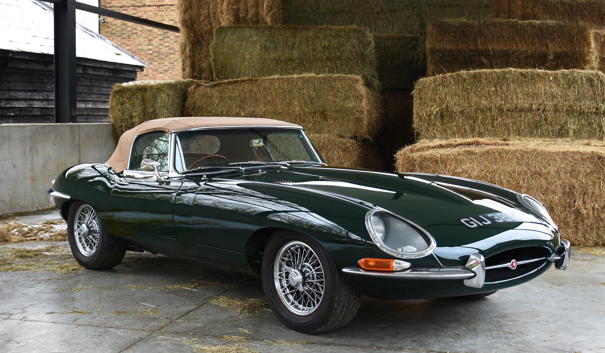
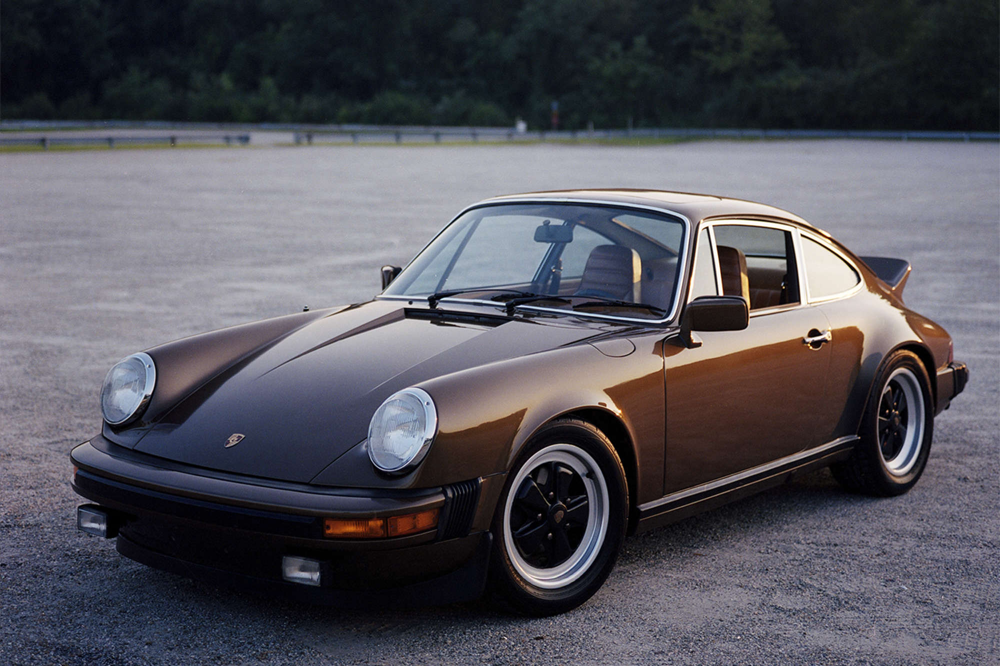
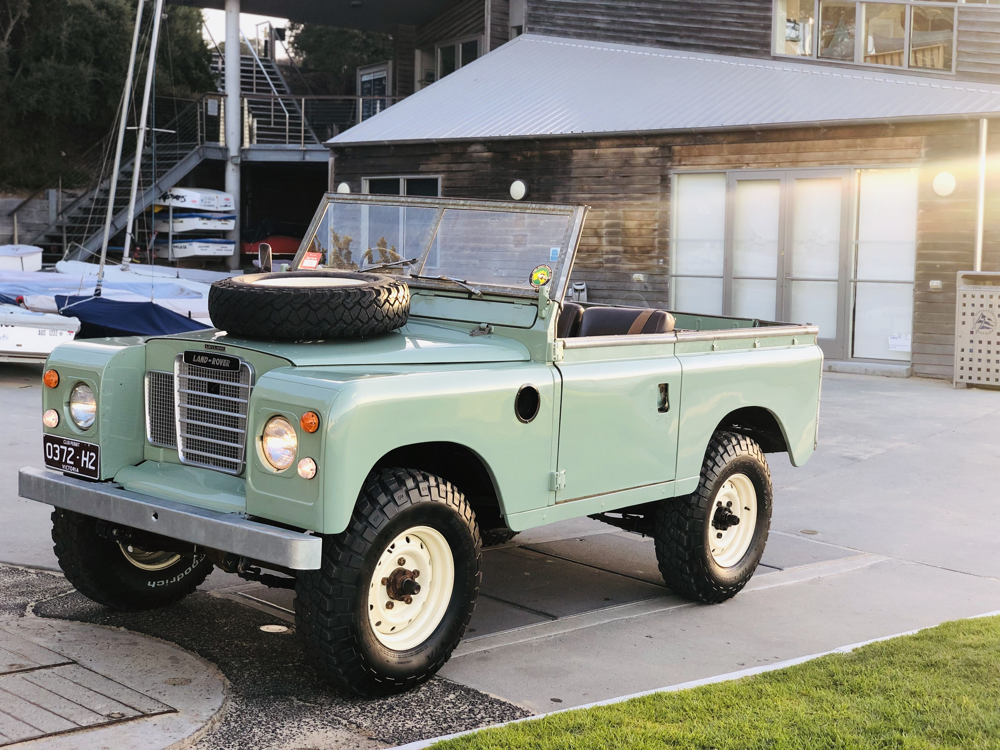
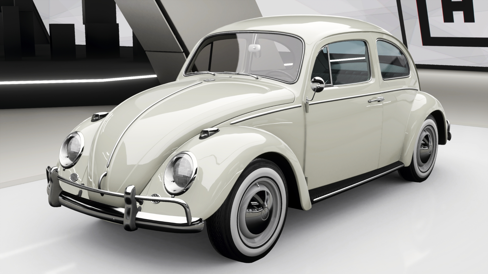
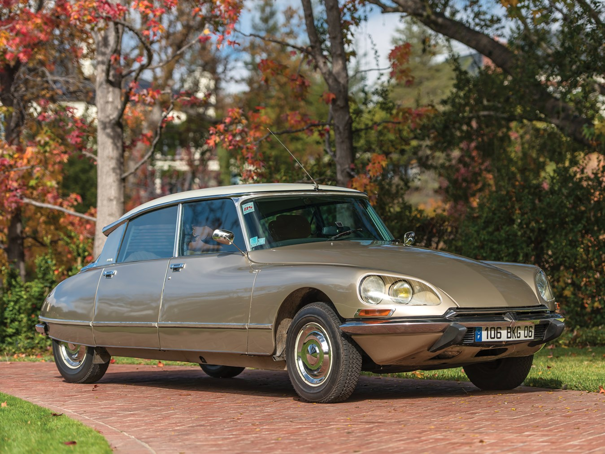
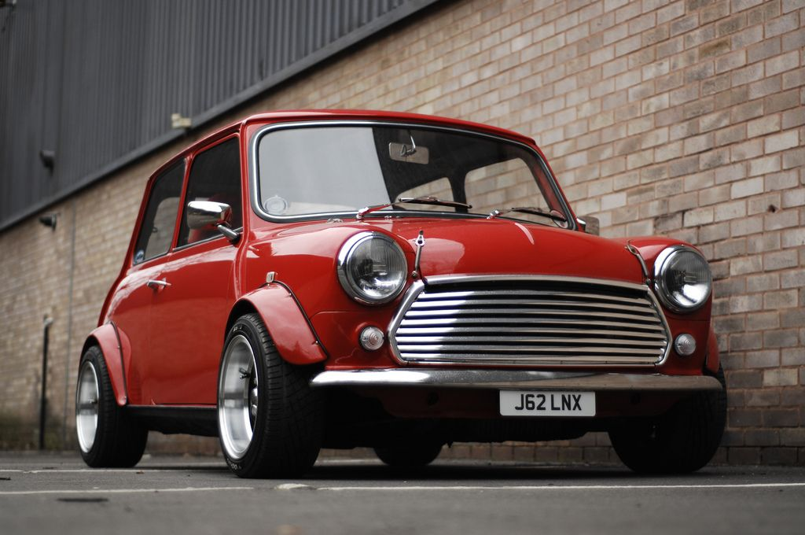
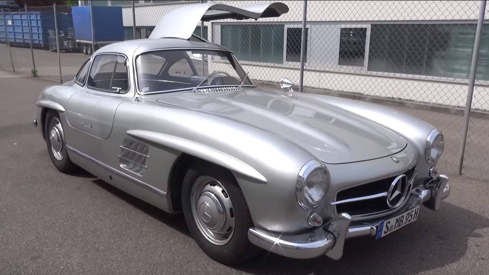
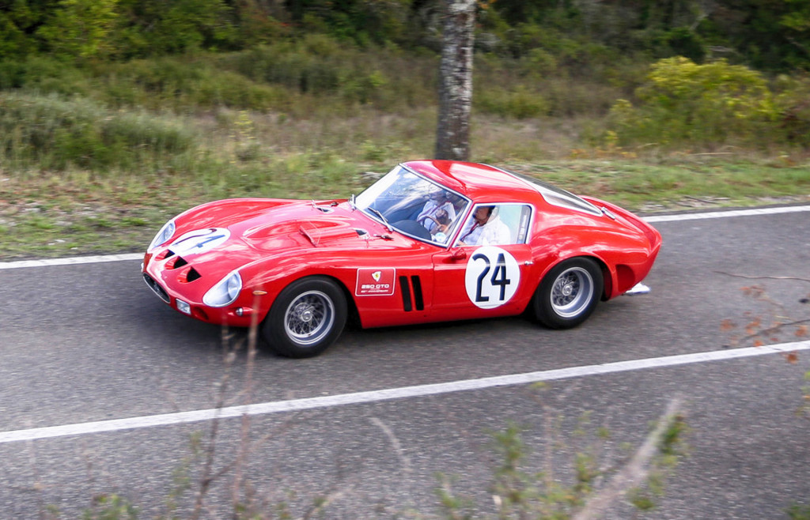
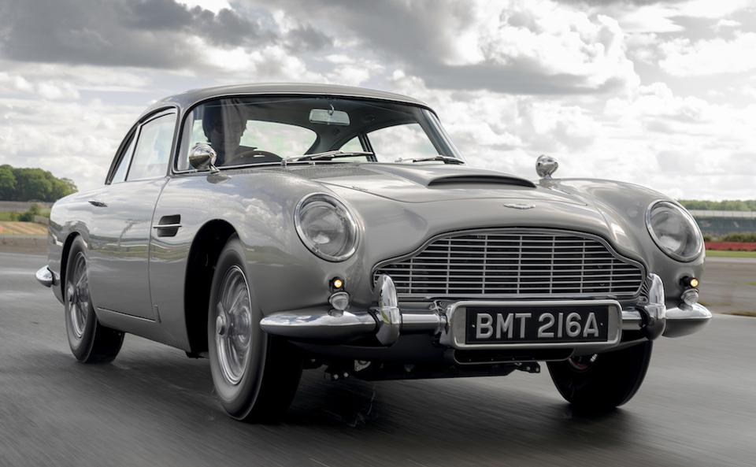

1. JAGUAR E-TYPE
The most beautiful car ever made: the Jaguar E-type is number one on our top ten classic cars of all time.
“The most beautiful car ever made” were the words of Enzo Ferrari and of course he was right. Based on the D-Type, the three times Le Mans winner between 1955 and 1957, the E-Type Jaguar was a stunning example of what British car manufacturer Jaguar were capable of back in the day. Sixties chic and quicker than a Ferrari at a third of the price, it was the ultimate sports car of its time.
The E-Type managed to stay in production until the mid seventies. This was largely down to the fact it was constantly being revised on the inside, without effecting its elegant appearance too drastically on the outside. This meant it stayed with the times whilst still looking utterly gorgeous. One of the best cars ever made and it’s British.
To see image gallary click here
2. PORSCHE 911
Number two on our list of the top ten classic cars of all time is Ferdinand’s Icon, the Porsche 911.
The 911 was the successor to the famous 356 back in 1963 and became a roomier, more powerful evolution. Porsche originally intended to called it the 901; however the French, or more specifically Peugeot had the rights to car names with three digits with the second digit being ‘0’.
The earliest 911 started with a 2.0 engine. Air cooled and rear mounted, of course with just 130 bhp, it was a far cry from today’s modern 911 turbos, with their 500+ bhp. Still, the 911 had nearly 50% more power than the flat four 356; so was powerful for the time. With more power on the way by the seventies; the Carrera RS is now seen by many as the ultimate 911. Although the original 911 ceased production in 1989, the name continues today in the Porsche line-up.
To see more images click here
3. LAND ROVER
Land Rover is described as ‘the best 4×4 by far’, and has made it to number three on our top ten classic cars of all time.
From nothing more than an idea and a sketch on the Welsh beach, Land Rover has become the four wheel drive vehicle that all others aspire to across the world. The Land Rover is the go anywhere, do anything vehicle. Engineering and shaping its way through the decades to remain in that no. 1 position; when it comes to 4×4. It all started with the 80″ series 1 back in 1948, little did Maurice Wilks now that he had created a whole new genre of vehicle 40 years before its time.
Capability and composure are two attributes of the Land Rover with the strength to make history while constantly innovating, one of the greats never to be repeated.
To see more images click here
4. VOLKSWAGEN BEETLE
The people’s car, the Volkswagen Beetle is our number four in the classic cars top ten.
One of the best selling cars of all time. The Volkswagen Type 1, to use its original name, had very humble beginnings; an economic four seater that everyone in Germany could obtain. Today after a massively successful production, spanning eight decades, it still enjoys a huge cult following and has done, throughout the best part of its life.
The Beetle’s longevity is down to its simplicity. With no more than 200 moving parts in the original flat four, air cooled engine, it is definitely workable for most hobby mechanics. Combined with its unmistakable looks, it is obvious as to why everybody loves a Beetle.
To see more images click here
5. CITROEN DS
Number five on our list of the top ten classic cars of all time is the French Goddess, the Citroen DS.
Citroen’s long awaited successor to the Traction Avant was the DS. Once again it was way ahead of its time with its sci-fi styling and minimal interior. From the makers of the 2CV and HY Van came the future of motoring. Citroen’s quirky yet uber stylish DS set out its own terms from the outset. The doors were devoid of window frames, and the rear brake lights were set in the eye line of following motorists on purpose. Slim pillars meant superb all round visibility for the driver and its hydraulic independent suspension gave comfort like never before. Is it any wonder why within 15 minutes of it’s unveiling, at the 1955 Paris Motor Show, 743 orders were taken and by the end of the day 12,000?
To see more images click here
6. MINI
Cool Britannia, the Mini is number six on our list of the top ten classic cars of all time.
The Mini spans classes and appeals to everyone from George Harrison to Mr Bean. Never has a car been as much an icon. It is a mode of transport from 60’s chic to the 80’s new romantic style. The world has loved the Mini for decades and still does. The transverse engine front wheel drive layout saved space and it allowed for 80% of the area of the car’s floor pan to be used for passengers and luggage; which influenced a generation of car makers.
What’s more, the Mini handled with pinpoint accuracy, making it extremely fun to drive. The Mini Cooper and Cooper S were the icing on the cake, with extra power turning the Mini into a formidable rally car. Beating all competition to win the Monte Carlo Rally not once, but three times in 1964, 65 and 67. All this just adds to the Minis reputation, we would all agree that the Mini is “Cool Britannia”.
To see more images click here
7. MERCEDES 300SL GULLWING
Number seven on our list of the top ten classic cars of all time is the world’s first supercar, the Mercedes 300SL Gullwing.
Mercedes had no plans to put their 300SL race car into production until official American importer of Mercedes-Benz Maxi Hoffman tirelessly campaigned to make sure they changed their mind. The Gullwing was launched at the New York International Motor Show in 1954 and received the acclaim of the admiring crowds, but it wasn’t just a pretty car. It was designed with a racing heritage built over a space frame chassis and a flat graceful body boasting impressive aerodynamics and a powerful straight six developing 215 bhp, a first for Mercedes with a fuel injected engine that had never been seen before. Mercedes even built 29 in aluminum that are now worth four times the already expensive steel versions.
To see more images click here
8. FORD MODEL T

It comes in any colour as long as it’s black. The Ford Model T is eighth on our top ten classic cars of all time.
Henry Ford’s practical and affordable horseless carriage for the common man was conceived back in 1908 at an original cost of $850 to the buying public. However, by 1925 it had decreased to less than $300 ensuring that 40% of all cars sold in the United States were Ford Model T’s. Henry’s car for the masses was a success with more than 15 million being produced between 1913 and 1927. With production plants not only in the states but also Europe and England, Ford had started their world domination.
To see more images click here
9. FERRARI 250 GTO
The ultimate Prancing Horse, the Ferrari 250 GTO comes in at number nine on our top ten classic cars of all time.
Ferrari needs no introduction, and one of our top ten simply had to be the V12 300 bhp Ferrari 250 GTO. The most expensive car ever sold at auction (with one going for just under £22,850,000 back in 2014), this iconic beauty spawned every other Ferrari after it and has inspired all of the competition in the past. With only 36 ever made out of homologation requirements, it’s surprising to find out they all still exist today.
The cars outward design came from the necessity to keep it low to the ground and improve aerodynamic efficiency; the engine was moved further back and also kept as low as possible. Quad exhaust pipes and large integrated rear spoiler give the GTO an intimidating appearance from behind and the striking elliptical grille, topped by unmistakable triple vents are full of purpose yet aesthetically pleasing. Is it the best Ferrari ever made? We think so.
To see more images click here
10. ASTON MARTIN DB5
Shaken, not stirred. Number 10 on our top ten list of classic cars of all time is the ice cool Aston Martin DB5.
The quintessential British grand tourer, no wonder it was James Bonds car of choice. The DB5 was the last evolution of the DB4 series. It’s renowned as the most famous car in the world thanks to its starring role in countless 007 movies. With a 4.0 litre inline 6 cylinder engine, the DB5 wasn’t an out and out sports car. Although capable of speeds up to 145 mph, it was more of a luxurious 2+2, with standard features such as wool pile carpets and electric windows. With a magnesium alloy body built to superleggra patent technique and a wicked combination of Italian styling and British engineering, any self respecting spy would be proud to drive a DB5.
To see more images click here